EL PRODUCTO
Los walkies de la tienda se cargan en una estantería y cada uno se lo lleva quien lo necesita. Con la hoja de papel nadie sabía con certeza quién tenía cada uno, y los que no volvían se descubrían tarde. Walkiton es un kiosco que se coloca junto a los cargadores: cada walkie lleva una etiqueta NFC, el lector la reconoce al dejarlo en la plataforma y la pantalla pide el número de empleado. Lo he diseñado, montado y programado yo, desde la carcasa impresa en 3D hasta el firmware.
INFRAESTRUCTURA TÉCNICA
- PLACA: Waveshare ESP32-S3 con pantalla táctil de 7" (800 × 480).
- INTERFAZ: LVGL 8, con teclado propio, avisos y cabecera fija.
- LECTURA: lector NFC PN532 por UART y una etiqueta NFC dentro de cada walkie.
- DATOS: tarjeta SD con CSV de walkies, empleados y movimientos; reloj DS3231 con pila.
- RED: punto de acceso propio con portal cautivo y panel web servido por el ESP32.
01 / EL FLUJO
Coger y devolver, sin pensar
El kiosco está pensado para usarse con prisa y sin explicaciones. La pantalla en reposo solo dice una cosa: «coloca el walkie en la plataforma». A partir de ahí, cada paso pide lo mínimo y suena un pitido distinto según lo que pase.
El lector NFC reconoce la etiqueta y sabe qué walkie es.
Teclado numérico grande para el número de empleado.
Nombre y sección en la misma pantalla, sin pasar por nadie.
Al dejarlo de nuevo en la plataforma, la devolución queda registrada.
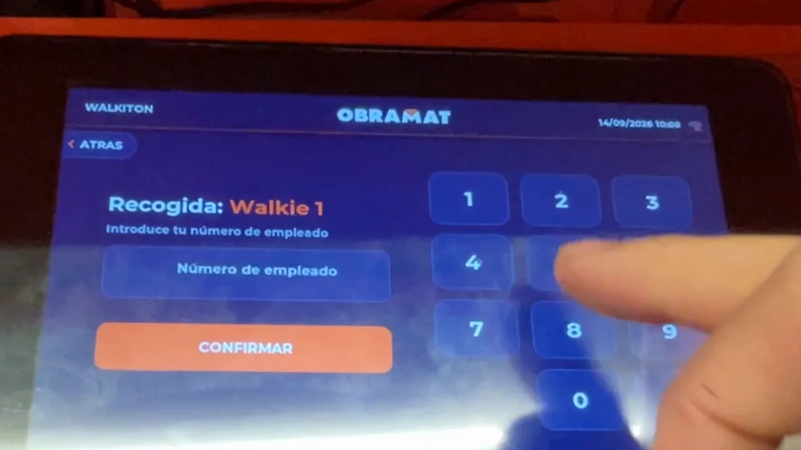
// Recogida: número de empleado.
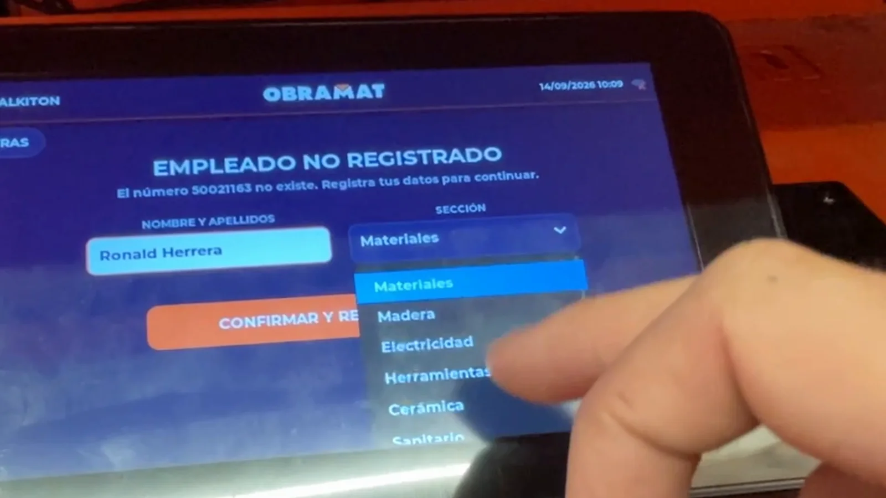
// Alta: nombre y sección.
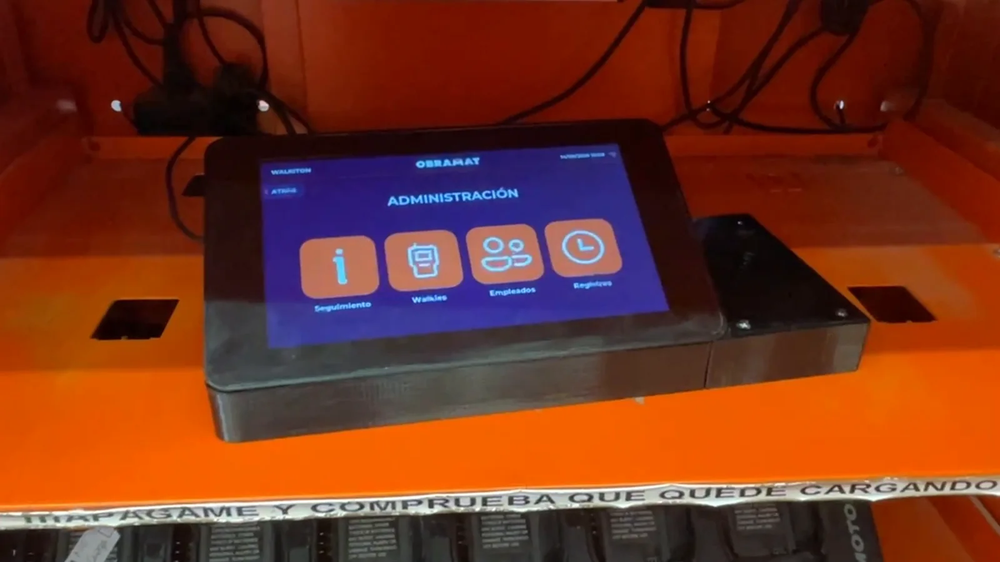
// El kiosco, junto a los cargadores.
02 / HARDWARE
Montado a mano, pieza a pieza
La bandeja donde se apoya el walkie y el soporte de la pantalla los diseñé e imprimí en 3D (seis piezas). Dentro van el lector NFC, el zumbador y el reloj, cableados a la placa de la pantalla.
- Etiqueta NFC en cada walkie: una pegatina dentro de la tapa de la batería, invisible y sin cambiar el walkie.
- Hora sin internet: un reloj DS3231 con pila mantiene la hora aunque se vaya la luz; comparte el bus I2C de la pantalla táctil.
- Sonidos por evento: el zumbador tiene 37 tonos y cada evento (lectura, error, préstamo…) puede usar uno distinto.
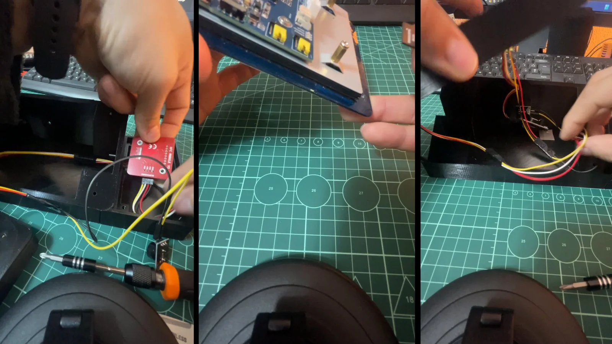
// Montaje del lector y el cableado.
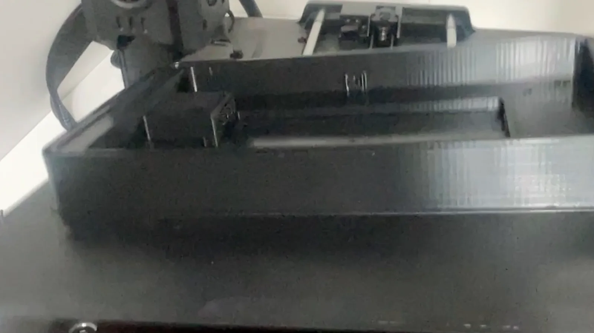
// La bandeja, en la impresora 3D.
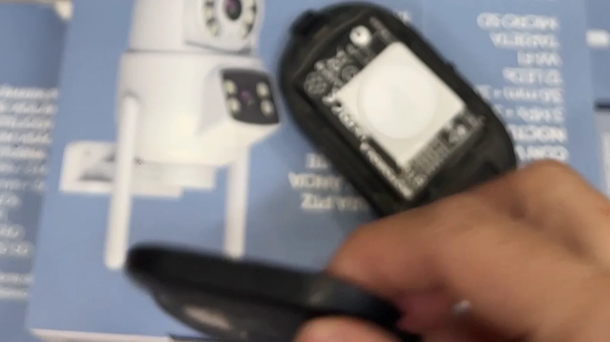
// La etiqueta NFC, dentro del walkie.
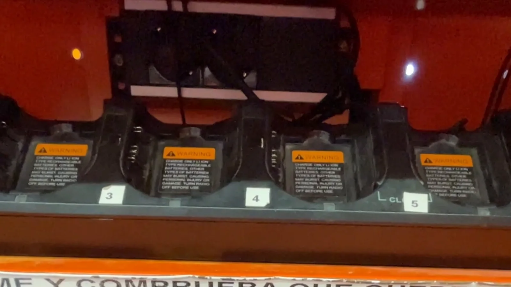
// Donde vive: los cargadores de la tienda.
03 / LA INTERFAZ
Saber en un vistazo quién tiene qué
Además del préstamo, el kiosco tiene una parte de gestión. «Walkies» muestra el estado de cada uno, «Registros» los últimos movimientos con el tiempo que duró cada préstamo, y «Seguimiento» resume lo que hay que revisar: walkies en uso, los que llevan fuera 12 horas o más y los que nadie usa.
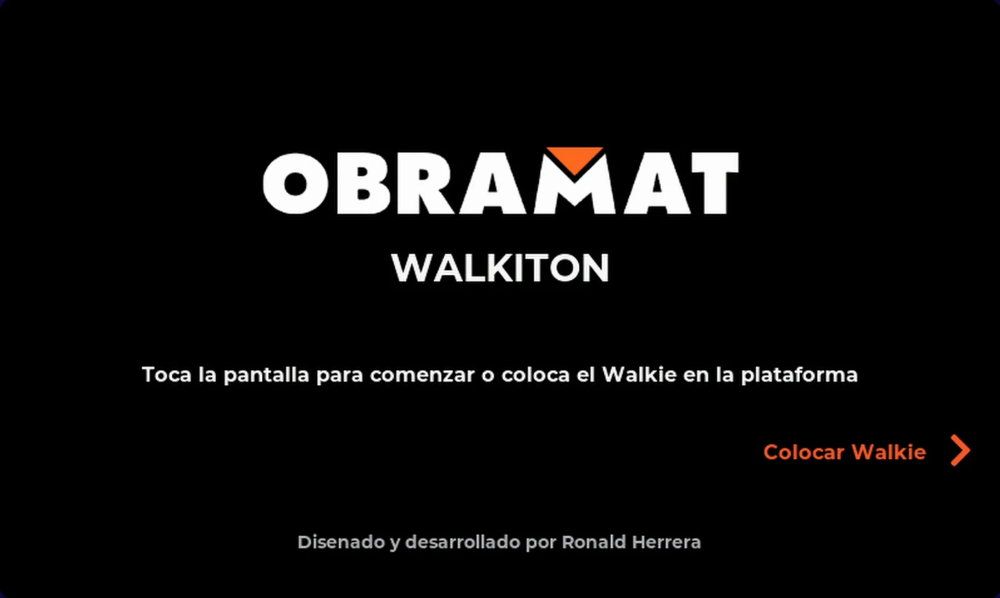
// Reposo: la única instrucción.
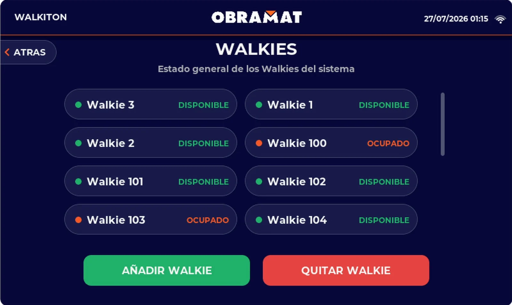
// Walkies: disponibles y ocupados.
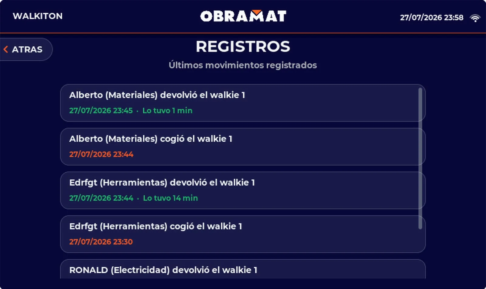
// Registros (datos de prueba).
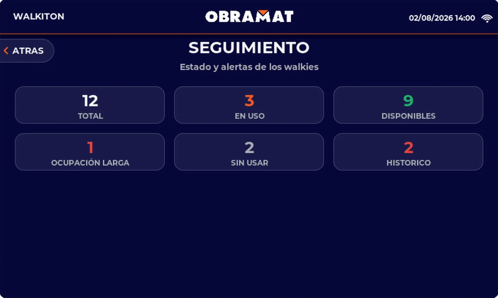
// Seguimiento: lo que hay que revisar.
04 / INFORMES SIN INTERNET
El móvil se conecta al kiosco, no a la nube
Para sacar los datos no hace falta ordenador, router ni internet. El kiosco tiene su propia red Wi-Fi y, al conectarse, el móvil abre solo una página servida por el ESP32. Desde ahí se descarga el informe o se gestiona todo con un panel protegido con contraseña.
La pantalla muestra cómo conectar el móvil a la red del kiosco.
Un DNS que responde a todo hace que el móvil lo trate como portal cautivo.
El PDF se genera en la propia placa, por periodo.
Tablas, editar, borrar e importar o exportar CSV de walkies, empleados y movimientos.
05 / ARQUITECTURA
Cómo encajan las piezas
- 11.492líneas de firmware
- 19rutas web
- 37tonos de aviso
- 3CSV en la tarjeta SD
- 12 humbral de ocupación larga
- 800 × 480píxeles táctiles
Kioscolo que toca el empleado
Datosen la propia placa
Redsin depender de la tienda
Salidalo que se lleva el encargado
// Decisiones técnicas y por qué
WiFi.setSleep(false)): sus transiciones desincronizaban el refresco. El kiosco siempre está enchufado.delay() dentro de LVGL: cada nota del zumbador es un temporizador de un solo disparo.06 / EN EL CÓDIGO
Fragmentos reales del firmware
Lectura NFC que se recupera sola
Un temporizador de LVGL consulta el lector con un tiempo de espera corto (100 ms) para que la pantalla no se note lenta. Cuando no hay walkie, cada 5 segundos comprueba que el lector sigue vivo y, si no, lo reinicia.
Con el walkie puesto, solo se procesa una vez: hasta que no se retira no cuenta como una lectura nueva.
bool detectado = nfc.readPassiveTargetID(PN532_MIFARE_ISO14443A, uid, &uidLength, 100);
if (!detectado) {
nfcTagPresente = false; // se retiro (o nunca hubo), listo para la proxima
// Latido cada 5s: si el modulo ni siquiera responde a una consulta
// basica (version de firmware), esta colgado - lo reiniciamos solo.
static uint32_t ultimoLatido = 0;
uint32_t ahora = millis();
if (ahora - ultimoLatido > 5000) {
ultimoLatido = ahora;
if (nfc.getFirmwareVersion() == 0) {
nfcReiniciar();
}
}
return;
}
if (nfcTagPresente) {
return; // el mismo tag sigue puesto, ya se proceso
}
nfcTagPresente = true;
despertarPantalla();
// … busca el UID entre los walkies registrados y lanza el préstamo o la devoluciónPortal cautivo para el informe
El kiosco crea su propia red y arranca un DNS que responde a cualquier dominio con su propia IP. Android, iOS y Windows comprueban si hay internet pidiendo rutas concretas; al recibir la respuesta del kiosco, el móvil entiende que es un portal y abre el navegador solo.
WiFi.setSleep(false);
WiFi.softAP(AP_INFORME_SSID, AP_INFORME_PASS);
// "*" = responde con la IP propia a cualquier dominio que pregunte un
// movil conectado al AP (las comprobaciones de conectividad de
// Android/iOS entre ellas) - eso es lo que hace que el movil detecte un
// "portal cautivo" y ofrezca abrir el navegador solo.
dnsServidor.start(53, "*", WiFi.softAPIP());
// … rutas del panel y del informe
bdServidor.on("/informe.pdf", HTTP_GET, bdManejarInformePdf);
// Rutas concretas que usan Android y Windows para comprobar si hay
// internet de verdad - ver bdManejarPortalCautivo().
bdServidor.on("/generate_204", HTTP_GET, bdManejarPortalCautivo);
bdServidor.on("/ncsi.txt", HTTP_GET, bdManejarPortalCautivo);
bdServidor.onNotFound(bdManejarInicio);RESUMEN DEL IMPACTO
Walkiton nace de un problema que veía cada día en mi trabajo y lo resuelve con un objeto que cualquiera entiende sin leer instrucciones. Detrás hay diseño de producto (un flujo de dos pasos, avisos claros, sonidos), hardware montado e impreso a mano y un firmware que aguanta el uso real: se recupera solo si el lector se cuelga, mantiene la hora sin internet y entrega los datos en el móvil sin depender de la red de la tienda.